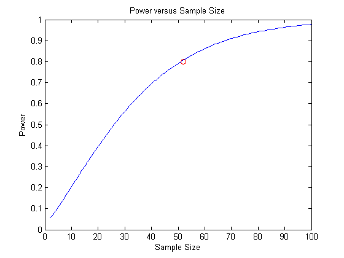
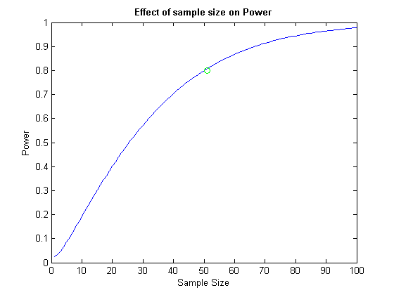

Others: Power Analysis
- Power Analysis I: Basic Concept
- Power Analysis II: Example
- MATLAB: sampsizepwr
* Zihan Chen * 2015-03-29
Contents
Power Analysis (T-Test) MATLAB
- Based on MATLAB doc: * http://www.mathworks.com/help/stats/sampsizepwr.html
clc; clear; close all; % data mu = 100; % H0 mu = 100 ml sigma = 5; % H0 std = 5 ml muHa = 102; % Ha mu = 102 ml % Required Sample Size p0 = [mu sigma]; p1 = muHa; nout = sampsizepwr('t', p0, p1, 0.80); % Power v.s. Sample Size nn = 1:100; pwrout = sampsizepwr('t',p0, p1, [], nn); disp(['nout = ', num2str(nout)]); figure; plot(nn,pwrout,'b-',nout,0.8,'ro') title('Power versus Sample Size') xlabel('Sample Size') ylabel('Power')
nout = 52
Power Analysis (T-Test) MATLAB
Based on Power Analysis Example https://youtu.be/fRm2dEWSJrk
clc; alpha = 0.05; power = zeros(1,100); for dof = 1:100; tc = tinv(1-alpha/2, dof); % t critical xc = tc * (sigma/sqrt(dof+1)) + mu; beta = tcdf((xc - muHa) / (sigma/sqrt(dof+1)), dof); power(dof) = 1 - beta; end % nout noutm = find(power>0.8,1); disp(['nout = ', num2str(nout)]); % plot dof = 1:100; figure; plot(dof, power, noutm,0.8,'go'); xlabel('Sample Size'); ylabel('Power'); title('Effect of sample size on Power', 'FontWeight', 'bold');
nout = 52